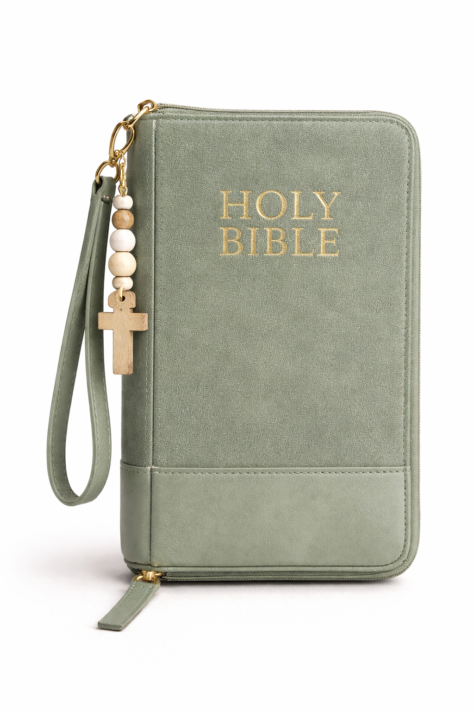
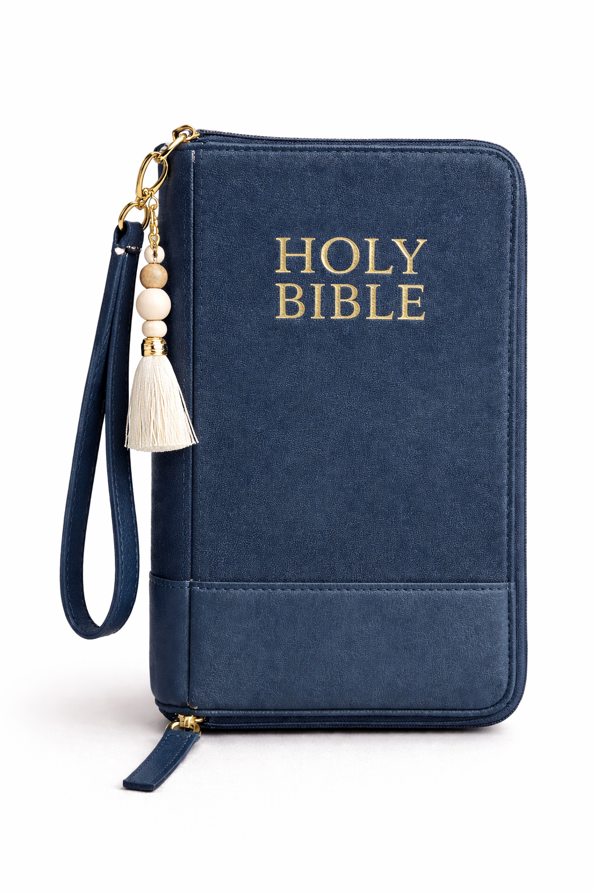

KIT 1
Nom du kit
Une courte description du kit, de son contenu et de ce qu’il permet de vivre.
CRÉATIONS YEIRN
Des supports pensés pour prolonger un temps d’écoute, de création et d’ancrage au-delà de l’atelier.
Les kits YEIRN sont conçus comme des prolongements sensibles de l’expérience vécue : pour accompagner une méditation, soutenir l’expression personnelle ou offrir un support créatif à quelqu’un.
Une courte description du kit, de son contenu et de ce qu’il permet de vivre.

Une courte description du kit, de son contenu et de la manière dont il s’inscrit dans l’univers YEIRN.

Une courte description du kit pour aider la personne à comprendre à qui il s’adresse.
Tu peux nous écrire pour obtenir plus d’informations, demander un devis ou réserver un kit.
Contacter YEIRN